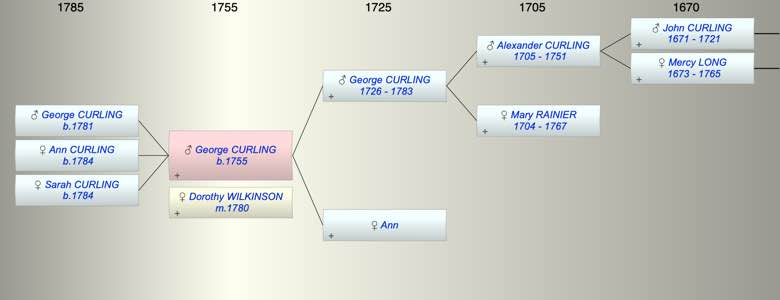

| [Index] |
| George CURLING (1755 - ) |
|  |
| b. 1755 at Stockton, Durham |
| m. 23 Dec 1780 Dorothy WILKINSON at St Botolph |
| Parents: |
| George CURLING (1726 - 1783) |
| Ann |
| Siblings (2): |
| Mary CURLING |
| Dorothy CURLING (1756 - ) |
| Children (3): |
| George CURLING (1781 - ) |
| Ann CURLING (1784 - ) |
| Sarah CURLING (1784 - ) |
| Events in George CURLING (1755 - )'s life | |||||
| Date | Age | Event | Place | Notes | Src |
| 1755 | George CURLING was born | Stockton, Durham | Note 1 | ||
| 23 Dec 1780 | 25 | Married Dorothy WILKINSON | St Botolph | Note 2 | |
| 1781 | 26 | Birth of son George CURLING | London | Note 3 | |
| 1783 | 28 | Death of father George CURLING (aged 57) | Whitechapel | Note 4 | |
| 1784 | 29 | Birth of daughter Ann CURLING | London | Note 5 | |
| 1784 | 29 | Birth of daughter Sarah CURLING | London | Note 6 | |
| Created on a Mac™ using iFamily for Mac™ on 8 Oct 2023 |